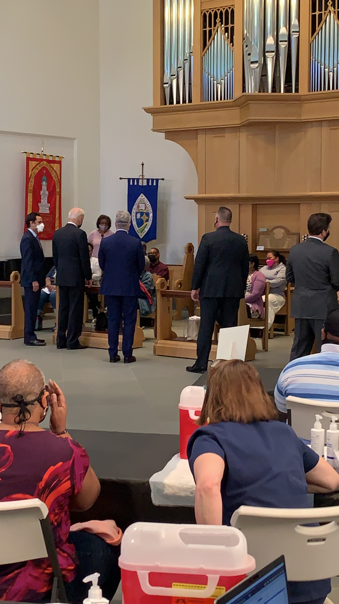

Correction: Please note the Immanuel Chapel is not a working chapel so the Center structure is technically not an altar.
POTUS arrived at 2:20 pm and began thanking officials from Neighborhood Health seated on the left side of the room. He received a round of applause as he approached people waiting for a vaccine.
“You’re doing the right thing,” he told them.
He then asked how many were getting their first shot and a few people raised their hand. Majority were here for their second shot.

Courtney Subramanian
White House correspondent
USA TODAY
▊▊▊▊▊▊▊▊▊▊
@cmsub